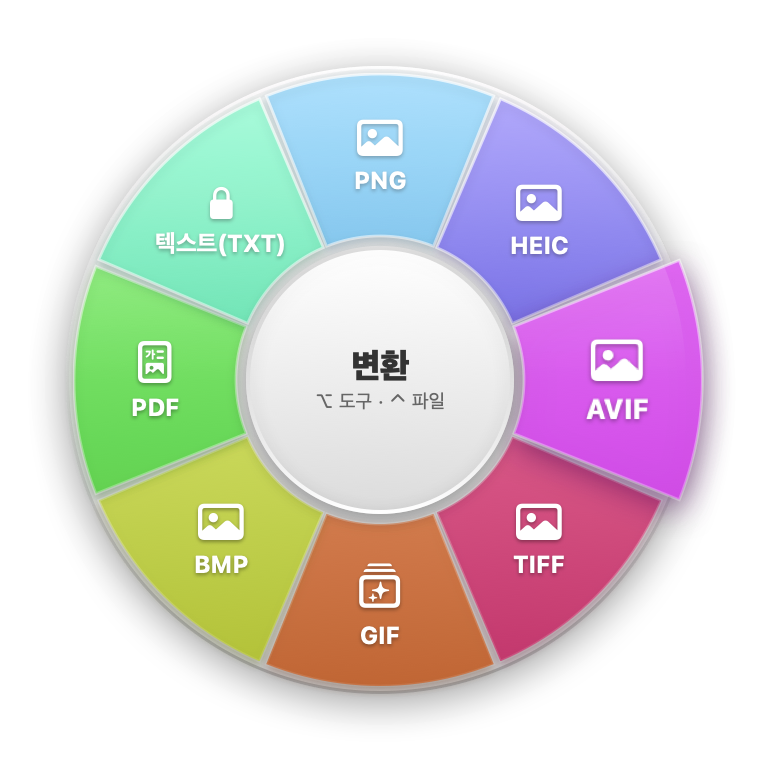
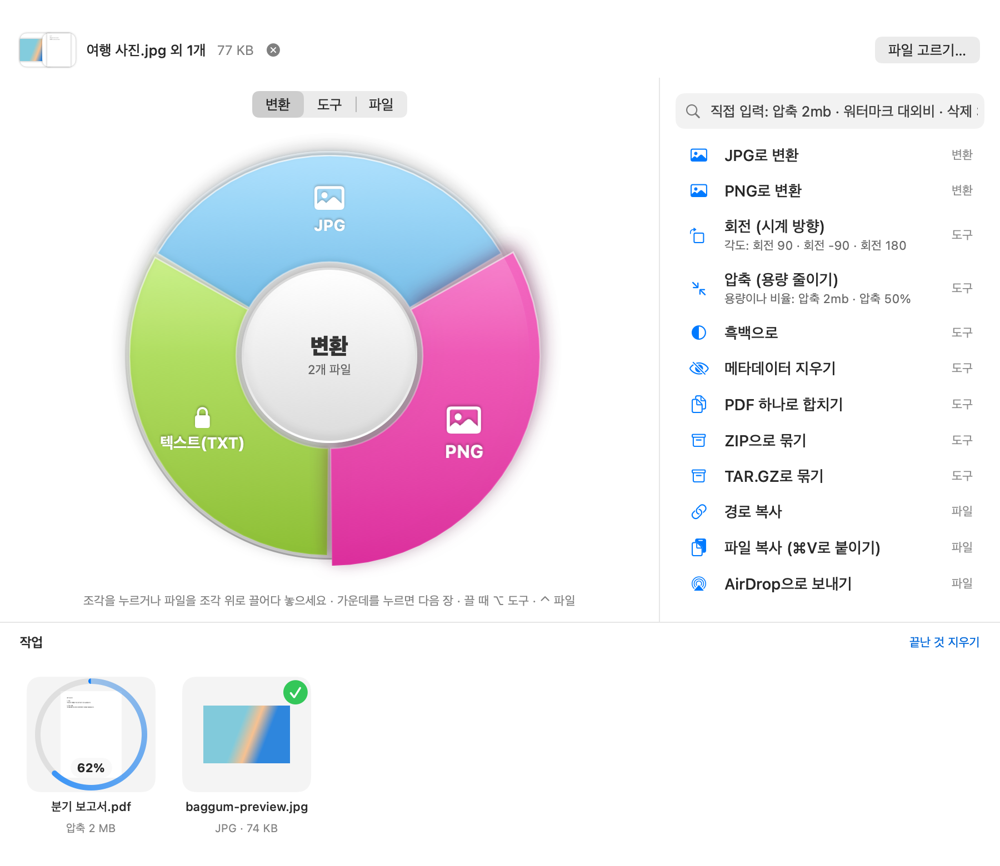
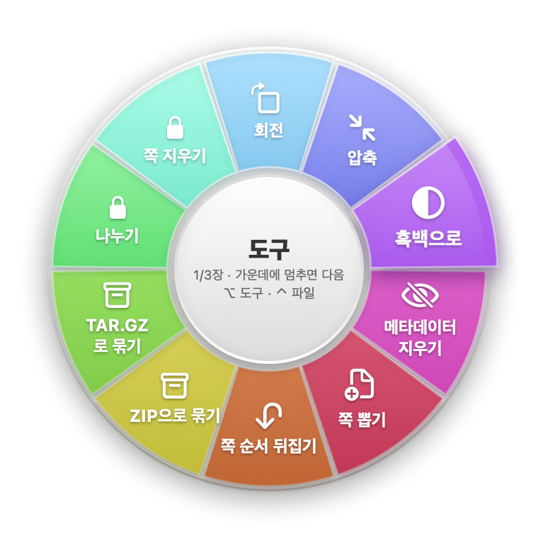
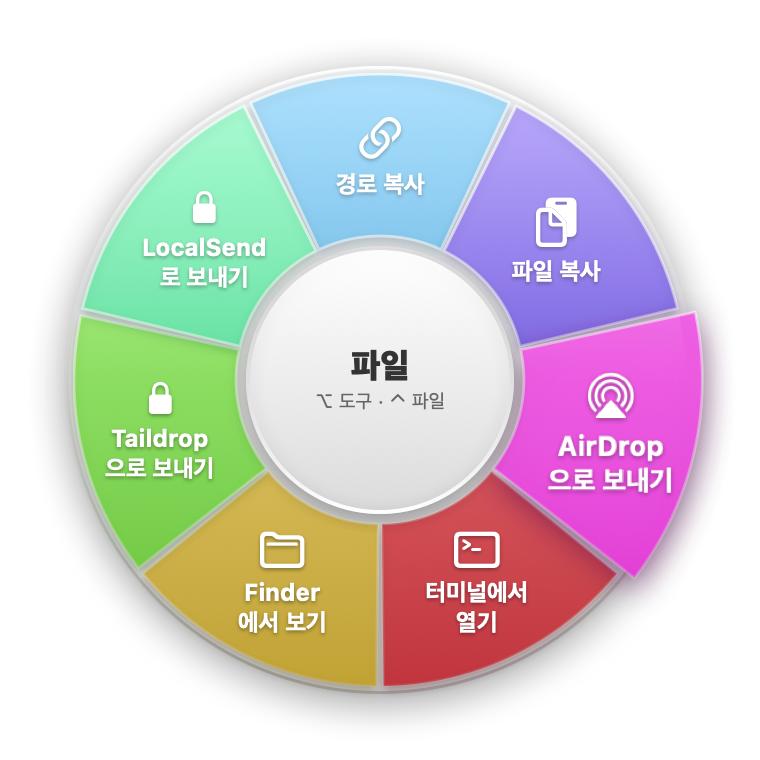
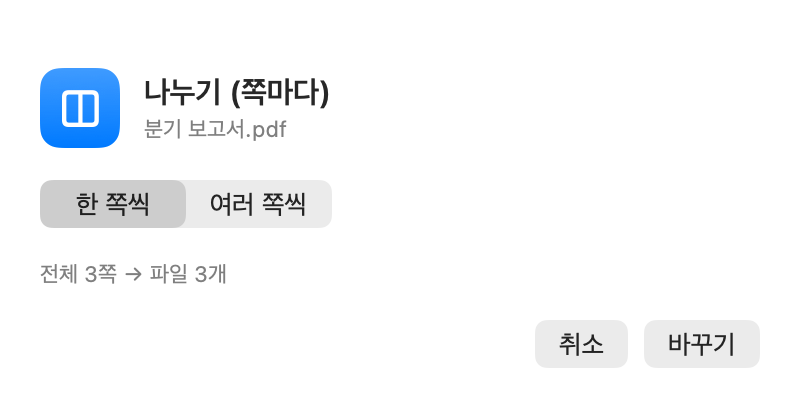
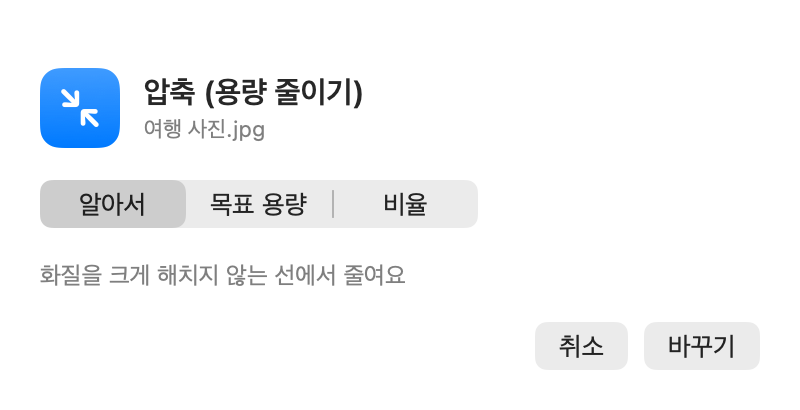
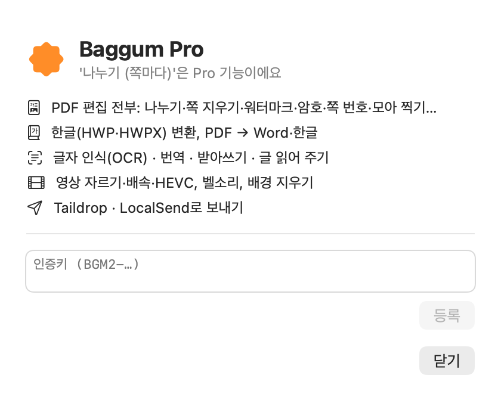
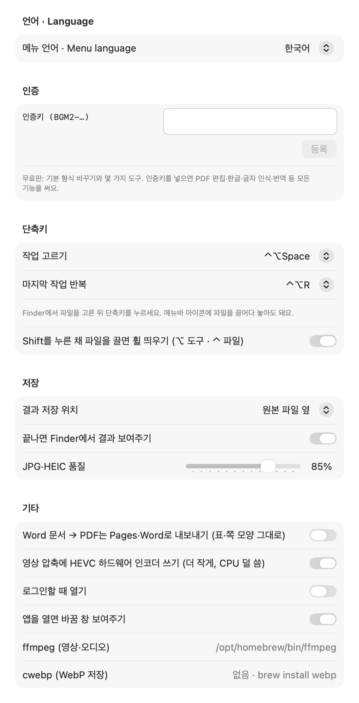

Baggum은 메뉴바에 사는 macOS 파일 변환기예요. 이미지·영상·오디오·PDF·한글(HWP)·문서·자막을 색깔 휠에서 고르거나 단축키로 바꿔요. 모든 처리는 내 Mac 안에서만 하고, 결과는 원본 옆에 새 파일로 저장해요.

마우스로 보면서 고르든, 키보드로 치든 편한 쪽을 쓰세요. 어느 쪽이든 작업 이름과 값만 고르면 바로 새 파일이 생겨요.
Baggum 창에 파일을 끌어다 놓으면 색깔 휠이 나와요. 조각을 누르거나 조각 위에 파일을 놓으면 바뀌어요.
Finder에서 Shift를 누른 채 파일을 끌면 커서 옆에 휠이 떠요. 창을 열 필요도 없어요.
파일을 고르고 ⌃⌥Space, 압축 2mb처럼 치고 ↩. 값까지 한 번에 줄 수 있어요.
처음 한 번만 하면 돼요.
brew install ffmpeg. 이미지·PDF·문서·한글은 없어도 돼요. 설정 맨 아래에서 설치됐는지 보여 줘요.내 파일은 밖으로 나가지 않아요. 변환·글자 인식·번역·받아쓰기 모두 Mac 안에서 처리해요. 인터넷에 올리지 않고, 원본 파일은 건드리지 않고 옆에 새 파일을 만들어요. (보내기 기능은 내가 고른 기기로만 보내요.)
메뉴바 아이콘 → Baggum 창 열기. 파일을 창에 끌어다 놓거나 파일 고르기…를 누르면 그 파일에 쓸 수 있는 작업만 휠에 나와요.

휠 위의 변환 · 도구 · 파일 버튼으로 휠을 바꿔요. 조각을 누르거나 조각 위에 파일을 놓으면 실행돼요.
작업이 많으면 휠 가운데에 "1/3장"처럼 나와요. 가운데를 누르면 다음 장으로 넘어가요.
파일마다 진행 고리가 돌고, 끝나면 결과 미리보기와 체크 표시가 붙어요. 카드를 누르면 Finder에서 보이고, 끌어서 다른 앱에 놓을 수도 있어요.


Shift-드래그 휠은 설정 → 단축키에서 끌 수 있어요. Finder의 다른 앱(예: 메일 첨부)으로 끄는 동작은 Shift를 누르지 않으면 평소대로 돼요.
손을 키보드에서 떼지 않고 바꾸는 방법이에요. Finder에서 파일을 고른 뒤 ⌃⌥Space를 누르면 작업 고르기 창이 떠요.
압축 2mb라고 치면 "2 MB로 압축"이 맨 위에 와요. ↩로 실행.| 하고 싶은 것 | 이렇게 |
|---|---|
| 작업 고르기 | Finder에서 파일 선택 → ⌃⌥Space → jpg → ↩ |
| 값과 함께 | 압축 2mb · 압축 50% · 크기 1920 · 자르기 0:10-0:45 · 속도 2 · 회전 -90 · 캡처 1:05 |
| PDF 값 | 페이지 3-5 · 삭제 2,5 · 순서 3,1,2 · 나누기 5 · 워터마크 대외비 · 쪽번호 3 · 모아찍기 4 · 암호걸기 1234abcd |
| 한글 초성 | ㅇㅊ → 압축, ㅈㄹ → 자르기, ㄴㄴㄱ → 나누기 |
| 목록에서 바로 | ⌘1–⌘9 (목록 순서), ↑↓로 옮기고 ↩ |
| 값만 넣을 작업 | ⇥를 누르면 작업 이름이 채워지고 값만 이어서 치면 돼요 |
| 같은 작업 다시 | 다른 파일을 고르고 ⌃⌥R — 창도 안 뜨고 바로 실행 |
| 닫기 | esc |
고를 것이 있는 작업은 바로 실행하지 않고 옵션 창이 먼저 떠요.


파일을 올리면 그 파일에 쓸 수 있는 것만 보여 줘요. PRO 표시는 인증키가 있어야 쓰는 기능이에요.
JPG · PNG · HEIC · AVIF · TIFF · GIF · BMP · PDF · WebP 변환, 압축(목표 용량·비율), 크기 조절, 회전, 흑백, 메타데이터(위치 등) 지우기, QR·바코드 읽기. PRO 배경 지우기, 글자 인식(→ 텍스트·검색되는 PDF), 여러 장 합치기
MP4 · MOV · MKV · WebM · AVI · GIF 변환, 소리 추출(MP3·M4A·WAV…), 압축, 소리 없애기, 장면 캡처. PRO HEVC(H.265) 변환, 자르기, 배속, 말소리 → 자막
MP3 · M4A · WAV · FLAC · Opus · AIFF 변환, 압축, 모노. PRO 아이폰 벨소리(M4R), 자르기, 배속, 음량 고르게, 받아쓰기
이미지로, 합치기(이미지 섞어도 됨), 쪽 뽑기, 순서 뒤집기, 압축, 회전, 흑백. PRO 나누기, 쪽 지우기·순서 바꾸기, 워터마크, 쪽 번호, 암호 걸기·풀기, 글자 인식, 평탄화, 주석 지우기, 모아 찍기, A4로 맞추기, 여백 자르기, 빈 쪽 지우기, 긴 이미지로, 그림만 뽑기, Word·한글·텍스트로
한컴오피스 없이 직접 읽어서 PDF · Word · 텍스트 · RTF · HTML · ODT로. PDF·Word·텍스트를 HWPX로 저장. 글자 모양, 문단 정렬, 표(병합 칸 포함), 그림, 용지 크기를 옮겨요. 배포용·암호 문서와 HWP 97 이하는 못 열어요.
TXT · RTF · Word(DOCX) · HTML · ODT · Markdown 서로 변환, PDF로. 자막 SRT ↔ VTT ↔ SMI(한국어 포함), ASS·SSA 읽기, 텍스트만 뽑기. PRO 번역(표·서식 유지), 글 → 음성 파일, 오피스(엑셀·파워포인트·Pages…) → PDF
ZIP · TAR.GZ로 묶기, 압축 풀기(ZIP · TAR · GZ · RAR · 7Z)
AirDrop, 경로·파일 복사, 터미널에서 열기, Finder에서 보기. PRO Taildrop(내 Tailscale 기기로), LocalSend(같은 Wi-Fi 기기로)
설치하면 무료판으로 시작해요. 인증키를 넣으면 모든 기능이 열려요. 잠긴 기능은 휠에 자물쇠, 목록·팔레트에 PRO 표시가 붙고, 누르면 Pro 안내 창이 떠요.
| 무료판 | Pro (인증키) |
|---|---|
| 이미지·영상·오디오·문서·자막 형식 바꾸기, 이미지 ↔ PDF | 한글(HWP·HWPX) 변환, PDF → Word·한글·텍스트, 오피스 → PDF, HEVC, 벨소리 |
| 압축 · 크기 조절 · 회전 · 흑백 · 메타데이터 지우기 · QR 읽기 · 소리 없애기 · 장면 캡처 · 모노 | 영상·오디오 자르기 · 배속 · 음량 고르게 · 배경 지우기 · 이미지 합치기 |
| PDF 합치기 · 쪽 뽑기 · 순서 뒤집기 | 그 밖의 PDF 편집 전부 (나누기 · 쪽 지우기 · 워터마크 · 쪽 번호 · 암호 · 모아 찍기 …) |
| ZIP·TAR.GZ 묶기, 압축 풀기, 복사, AirDrop, 터미널, Finder | 글자 인식(OCR) · 번역 · 받아쓰기 · 글 읽어 주기, Taildrop · LocalSend |
BGM2-…로 시작하는 인증키를 그대로 붙여 넣고 등록을 눌러요. 이메일은 필요 없어요.1.x 인증키는 Baggum 1.0 ~ 1.9에서 계속 쓸 수 있어요. 2.0부터는 새 인증키가 필요해요. 인터넷 연결 없이 확인해요.

메뉴바 아이콘 → 설정… (⌘,)

시스템 설정 → 개인정보 보호 및 보안 → 맨 아래 그래도 열기를 누르세요. 처음 한 번만 하면 돼요.
영상·오디오는 ffmpeg로 바꿔요. 터미널에서 brew install ffmpeg 한 줄이면 돼요. (Homebrew가 없으면 brew.sh 안내를 따라 먼저 설치하세요.) WebP 저장은 brew install webp.
번역과 받아쓰기는 macOS 26 이상에서 Mac에 들어 있는 기능을 써요. 처음 쓸 때 언어 모델을 내려받으라는 안내가 나오면 받아 주세요. 시스템 설정 → 일반 → 언어 및 지역 → 번역 언어에서도 받을 수 있어요.
처음에 "로컬 네트워크의 기기를 찾도록 허용"을 물으면 허용해 주세요. (시스템 설정 → 개인정보 보호 및 보안 → 로컬 네트워크 → Baggum.) 그래도 안 보이면 옵션 창에서 받는 기기의 IP 주소를 직접 넣을 수 있어요.
처음에 "Baggum이 Finder를 제어하려고 합니다"를 허용해야 선택한 파일을 읽을 수 있어요. 거절했다면 시스템 설정 → 개인정보 보호 및 보안 → 자동화 → Baggum → Finder를 켜 주세요.
기본은 원본 파일 옆이에요. 이름 뒤에 작업 이름이 붙고(예: 보고서-평탄화.pdf), 같은 이름이 있으면 번호가 붙어서 덮어쓰지 않아요. 설정 → 저장에서 위치를 바꿀 수 있어요.
본문, 글자 모양, 표, 그림, 용지 크기는 옮기지만 머리말·꼬리말·각주·글상자·도형·쪽 나눔 위치는 다를 수 있어요. 배포용·암호 문서와 HWP 97 이하 형식은 열 수 없어요.
메뉴바 아이콘 → Baggum 종료 후, 응용 프로그램 폴더에서 Baggum을 휴지통으로 옮기면 돼요.